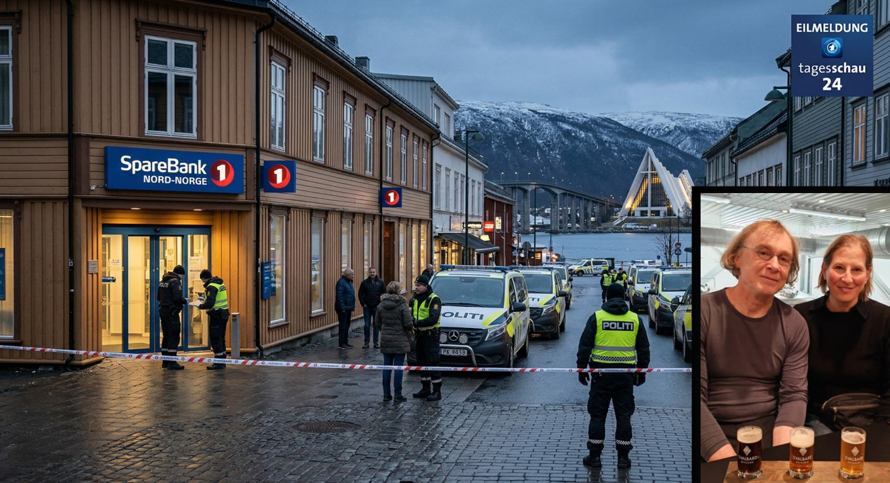

Urlauber aus Deutschland in Tromsø nach Banküberfall festgenommen
Zwei deutsche Touristen sind in der norwegischen Stadt Tromsø von der Polizei verhaftet worden. Die Behörden werfen ihnen vor, an einem Banküberfall in der Innenstadt beteiligt gewesen zu sein. Das Auswärtige Amt wurde informiert.

Tromsø – Zwei deutsche Staatsangehörige sind am gestrigen Abend in der nordnorwegischen Stadt Tromsø von der Polizei festgenommen worden. Nach Angaben der Tromsø politistasjon sollen die beiden Urlauber im Verdacht stehen, an einem Überfall auf eine Filiale der SpareBank 1 Nord-Norge in der Storgata, der Haupteinkaufsstraße der Stadt, beteiligt gewesen zu sein.
Die Verhaftung erfolgte am gestrigen Abend gegen 22:40 Uhr Ortszeit, als die Verdächtigen in einem Café unweit des Tatorts von Zivilbeamten gestellt wurden. Laut der norwegischen Nachrichtenagentur NTB versuchten die beiden zunächst zu flüchten, konnten jedoch nach einer kurzen Verfolgung auf dem Stortorget, dem zentralen Platz der Stadt, gestoppt werden.
„Die beiden Verdächtigen verhielten sich kooperativ und wurden widerstandslos festgenommen. Ermittlungen zur genauen Schadenshöhe laufen."
— Polizeisprecher Lars Eriksen, Tromsø politistasjonDie Beute soll nach ersten Erkenntnissen mehrere Tausend Kronen betragen. Augenzeugen berichteten, die Täter hätten die Bank kurz vor Schließung betreten und dabei das Personal bedroht. Niemand wurde dabei körperlich verletzt. Die Polizei prüft derzeit, ob die Deutschen in weitere Vorfälle in der Region verwickelt sein könnten.
Norwegen zählt jährlich mehrere Hunderttausend deutsche Touristen, besonders in der Hochsaison sowie rund um die Mitternachtssonne im Norden. Tromsø gilt als eine der beliebtesten Städte für Nordlichter-Tourismus. Kriminalität durch ausländische Touristen ist nach Angaben der norwegischen Polizei statistisch selten.
Das Auswärtige Amt in Berlin bestätigte auf Anfrage, über den Fall informiert worden zu sein, und erklärte, die zuständige deutsche Botschaft in Oslo stehe in Kontakt mit den norwegischen Behörden. Den Festgenommenen steht konsularischer Beistand zu.
Die Verdächtigen sollen noch heute einem Ermittlungsrichter vorgeführt werden. Bei einem Schuldspruch droht ihnen nach norwegischem Recht eine Freiheitsstrafe von bis zu sechs Jahren. Zu weiteren Details zu den Personalien der Festgenommenen äußerte sich die Polizei bislang nicht.
Dieser Artikel wird fortlaufend aktualisiert. Stand: 01. April 2026, 08:12 Uhr. Mitarbeit: Florian Scherzkeks Alzinger.